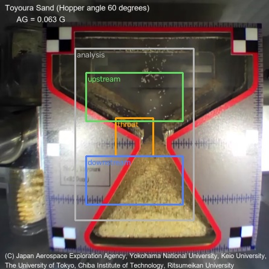
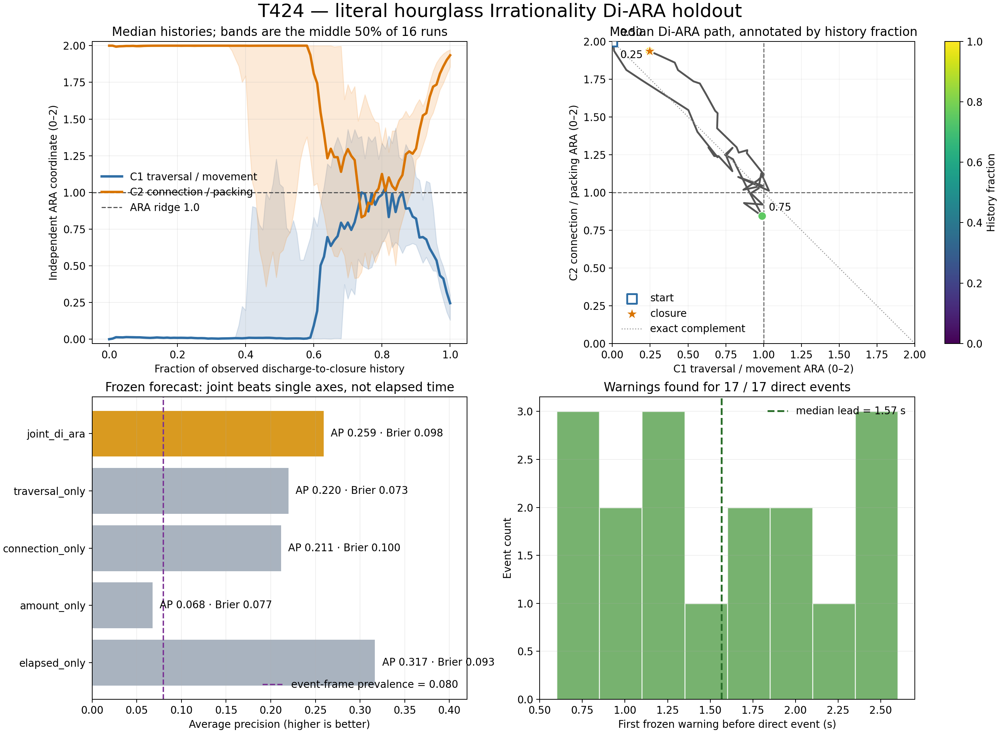

Structural traversal
16 / 16
Held-out Toyoura-sand runs crossed the C1/C2 equality line at least once.
A material-held-out test of whether independently measured packing and grain traversal form the two-axis handover geometry—and whether that geometry predicts a physical release or closure before it happens.
Held-out Toyoura-sand runs crossed the C1/C2 equality line at least once.
Better than either ARA axis alone, but worse than elapsed time at AP 0.317.
Median lead across 17/17 direct events; not unique after the elapsed-time control.

| ARA address | Physical instrument |
|---|---|
| Parent | One upper reservoir–throat–lower reservoir discharge |
| C1 movement | Optical flow through the throat |
| C2 connection | Translation-compensated packing persistence upstream |
| Joint plane | Two independently calibrated 0–2 coordinates; no sum-to-two rule |
| Direct events | 16 terminal closures plus one micro-jam release |
Development: alumina and silica sand. Untouched material holdout: Toyoura sand at 60° and 120° hopper angles, eight artificial-gravity settings each.

At the first independently detected flow onset, the held-out median landed at the familiar (0.5, 1.5) child pair while the compressed relation was 1.001—essentially the parent ridge.
This was not a frozen success gate. It is a repeatable geometric address worth preregistering next, not a confirmed prediction from this test.
| Gate | Observed | Status |
|---|---|---|
| Independent axes | r = −0.962; sum SD = 0.134 | Pass |
| Shift-null significance | p = 0.0224 | Pass |
| ≥20% structural gain | 4.63% | Fail |
| Beat every forecast baseline | lost to elapsed time | Fail |
| ≥10% Brier improvement | 0.098 vs best 0.073 | Fail |
| Positive warning lead | 17/17; median 1.57 s | Pass |
The hourglass data support the geometry: a held-out granular identity repeatedly transfers between connection-heavy packing and movement-heavy traversal on two independently measured ARA axes. They do not yet support a unique forecast law: run age predicts the final closure better.
The structural association at direct events was statistically non-random but small: event paths were 4.63% closer to the equality seam than circularly shifted histories (p = 0.0224), below the frozen 20% effect gate. Direct closure/release events had median coordinates (0.265, 1.921), which is consistent with final reclosure rather than the opening crossing.
The axes are also strongly anticorrelated. They pass the frozen independence test, but this experiment sits close to a single opposition and only sparsely occupies the both-high and both-low quadrants. A larger repeated-event source is required before claiming the full Di-ARA is forecast-active.
Keep the C1/C2 instrument fixed and preregister the opening handover—flow onset or arch-collapse/release—as the target. Use repeated flips under the same material and gravity so a simple elapsed-time clock cannot explain the result. Freeze the predicted coarse-pair/ridge neighbourhood and score it against duration-matched, circular-shift and single-axis controls.